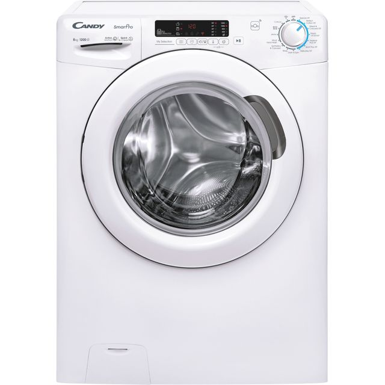

Bell Labs was the research arm of AT&T (founded
1925).
In the late 1960s, they needed an operating system to
manage computers for communication networks(manage = schedule programs, allocate CPU & memory,
control devices, share files).
1969–1971: Led to the creation of UNIX as a flexible
system for research and telecom needs.
History of C/C++
Early 1970s at Bell Labs (Dennis Ritchie)
System programming for UNIX
Why C?
Close to hardware, portable
Small runtime, fast compilation
Questions?
From Code to Machine
C Code
int totalCredits(int a, int b) {
return a + b;
}
Compiler
$ gcc -S totalCredits.c -o totalCredits.s
Translates C source into assembly
Assembly
totalCredits:
mov eax, edi ; a into eax
add eax, esi ; add b to eax
ret ; return result
x86-64 System V calling convention
Assembler
$ as totalCredits.s -o totalCredits.o
Assembles into machine code (object file)
Machine Code
55 ; push rbp
89 f8 ; mov eax, edi
01 f0 ; add eax, esi
5d ; pop rbp
c3 ; ret
Compiled with gcc -O1 on x86-64
Enroll Student (C Code)
#include <stdio.h>
// Enroll a student
void enroll_student() {
printf("Linking...\n");
printf("Enrolled!\n");
}
int main() {
enroll_student();
return 0;
}
Questions?
History of C++
History of C++
1980s: Bjarne Stroustrup
“C with Classes” → C++
C Is a Subset of C++
Every valid C program is (almost) valid C++

Why C++?
Object‑oriented programming
Performance with abstraction
Quick Check
Which is a subset of the other?
C++ is a subset of C
C is a subset of C++
They are unrelated
B. C is a subset of C++.
Questions?
I/O & Variables
Basic I/O
#include <iostream>
int main(){
int credits;
std::cout << "Credits enrolled? ";
std::cin >> credits;
std::cout << "You are enrolled in ";
std::cout << credits << "\n";
}
Quick Check
Which operator reads user input?
<< sends output
>> reads input
== compares values
B. cin >> reads input.
Variables
History of the Variable
1957: FORTRAN adds named data
1958: ALGOL adds := for it
Every language has kept it
Why Variables?
Store a value, reuse it
Give data a name
// No var, repeat
cout << 15;
cout << 15;
// Reuse the variable
int credits = 15;
cout << credits;
cout << credits;
What Is a Variable?
A named spot in memory
Holds one value at a time
The value can change
Anatomy of a Variable
Type: what kind of value
Name: how you refer to it
Value: what's stored now
int credits = 15;
// ^ ^ ^
// type name value
Word Origin: "Variable"
Latin: variare, to change
Math: an unknown quantity
1957: FORTRAN's named data
Declaring a Variable
Tells the compiler: this name
exists, and holds this type
No value yet
int credits;
// no value yet
Word Origin: "Declare"
Latin: declarare, make clear
You're telling the compiler
"this name will exist"
Code It: Declare a Variable
Declare an int named year
No value yet
How would you write it?
int year;
Initializing a Variable
Declare AND give a value
Happens in one statement
Best practice: always do this
int credits = 15;
// declared & set
Word Origin: "Initialize"
Latin: initium, a beginning
"Set the starting value"
Happens at declaration
Quick Check
What's the difference: declare vs. initialize?
No difference at all
Initialize also sets a value
Declare also sets a value
B. Initializing = declaring + giving it a starting value.
Code It: Initialize a Variable
Initialize gpa to 3.5
Type: double
How would you write it?
double gpa = 3.5;
Assigning a Value
= is the assignment operator
Stores a value in a variable
Variable must exist first
int credits;
credits = 15;
// after declare
Word Origin: "Assign"
Latin: assignare, mark out
1958: ALGOL's := operator
C++ shortens it to just =
Code It: Assign a Value
Declare age (int) first
Then assign it 20
How would you write it?
int age;
age = 20;
Reassigning a Variable
Change the stored value
Old value is overwritten
Same variable, new value
int credits = 15;
credits = 18;
// old value gone
Word Origin: "Reassign"
Latin: re-, again + assign
"Assign a new value again"
Same variable, new value
Quick Check
What happens when you reassign a variable?
A new variable is created
The old value is overwritten
Nothing, it's an error
B. Reassigning overwrites the old value in place.
Code It: Reassign a Variable
credits starts at 12
Reassign it to 16
How would you write it?
int credits = 12;
credits = 16;
Declare, Initialize, Assign, Reassign
int x; is declaring
int x = 5; is initializing
x = 9; is (re)assigning
int x; // declare
x = 5; // assign
int y = 5; // init
y = 9; // reassign
Types of Variables
Why Do Types Matter?
Type = what kind of data
Sets the size in memory
Sets what operations work
Word Origin: "Type"
Greek: typos, a mark/model
Defines a value's shape
int, double, char, bool...
Operators: + and -
+ adds two values
- subtracts two values
Work like in math class
int a = 10, b = 3;
int sum=a+b; // 13
int diff=a-b; // 7
Operators: * and /
* multiplies two values
/ divides two values
Division can drop decimals
int a = 10, b = 3;
int prod=a*b; // 30
int quot=a/b; // 3
Type: int
Whole numbers only
No decimal point
e.g., credits, a count
int credits = 15;
int year = 2026;
int in Practice
Most common numeric type
No fractions allowed
9/2 gives 4, not 4.5
int a = 9;
int b = 2;
int result = a / b;
cout << result; // 4
Quick Check
Which university variable fits int best?
unitsCompleted
cumulativeGPA
studentEmail
A. unitsCompleted is a whole number, no decimals.
Code It: Units Completed
Declare units
Set it to 45
How would you write it?
int units=45;
Type: double
Numbers with decimals
"Double precision" float
e.g., gpa, price, average
double gpa = 3.8;
double price = 19.99;
double in Practice
Keeps the decimal part
Use for any fraction
9.0 / 2 gives 4.5
double a = 9.0;
double b = 2.0;
double r = a / b;
cout << r; // 4.5